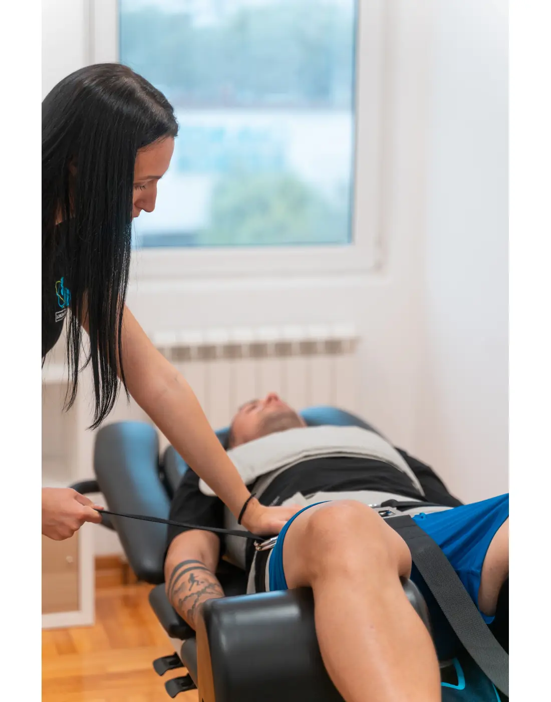
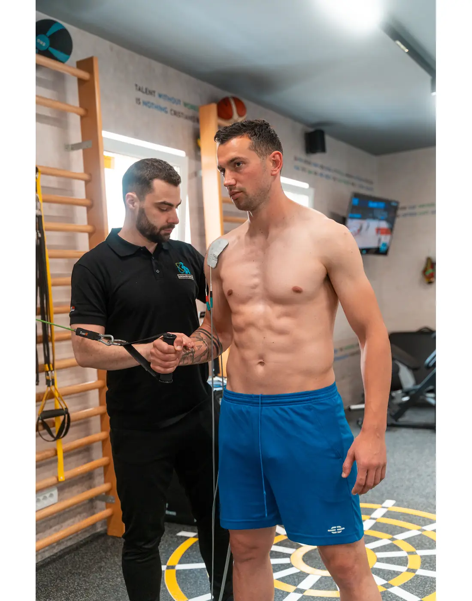
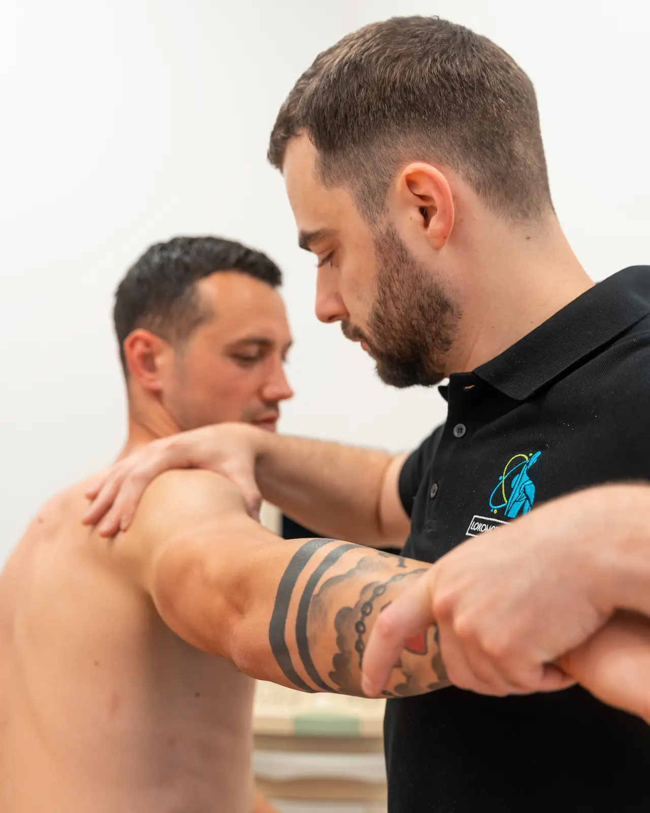
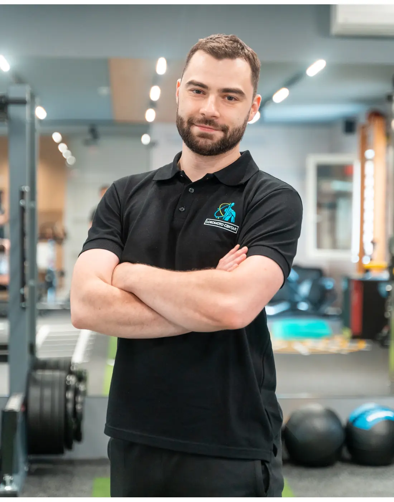

Znaš tehnike, ali ne i redosled
Kod jednog pacijenta terapija radi, kod drugog ne — a nije jasno zašto.
Sistem odlučivanja za fizioterapeute, trenere i fizijatre koji rade sa bolom u donjem delu leđa.
Svaki terapeut zna tehnike. Razlika nastaje kada znaš zašto, kada i kojim redosledom ih koristiš.
Kod jednog pacijenta terapija radi, kod drugog ne — a nije jasno zašto.
Pacijenta ili prerano opteretiš ili ga predugo zadržiš u istoj fazi.
Pasivan tretman smanji bol, ali pacijent nije spremniji za život, posao ili trening.
Ne dobijaš recept za jednu dijagnozu. Učiš proces razmišljanja koji primenjuješ i kada pred tobom stoji situacija koju ranije nisi video.
Crvene zastavice, diferencijalna dijagnoza, ključni testovi i odluka da li tretiraš ili upućuješ dalje.
Vežbe biraš na osnovu nalaza i trenutnog kapaciteta pacijenta — ne po receptu za dijagnozu.
Od traka i bučica do šipke, hex bara, kablova, pliometrije i sigurnog povratka sportu ili poslu.
Sistem koji možeš da primeniš sa svojim pacijentima već od prvog radnog dana nakon edukacije.
Prepoznaš kada pacijenta treba uputiti dalje
✓Izvedeš i protumačiš ključne testove za donja leđa
✓Razlikuješ najčešća stanja sa sličnom kliničkom slikom
✓Proceniš kada je snimak potreban, a kada nije
✓Složiš terapiju od prve vežbe do punog opterećenja
✓Menjaš fazu na osnovu kriterijuma, a ne utiska
✓Teorija postoji samo u meri u kojoj pomaže da doneseš bolju kliničku odluku. Oba dana uključuju praktičan rad.
Biopsihosocijalni pristup, tolerancija tkiva i pokret kao naučeno ponašanje.
Samo ono što neposredno menja odluku u praksi.
Crvene zastavice, indikacije za snimanje i odluka o upućivanju.
Izvođenje i tumačenje nalaza kroz rad u parovima.
Zašto je vežba alat i kako izbor proizlazi iz nalaza.
Bezbedan izlazak iz bola i aktivna terapija sa jasnom progresijom.
Trake, bučice, šipka, hex bar, kablovi i pliometrija.
Rad u grupama — od procene do kriterijuma za otpust.
Od individualne procene do kontrolisanog opterećenja — u prostoru u kome se svakodnevno radi sa realnim pacijentima.




REALAN RAD · REALNE KOREKCIJEPolaznici rade u parovima. Predavač prati izvođenje, ispravlja detalje i pomaže da nalaz pretočiš u sledeću terapijsku odluku.

Autor edukacijeFizioterapeut i osnivač Lokomoto Centra u Beogradu, sa više od petnaest godina praktičnog rada u proceni i rehabilitaciji.
Cilj nije da zapamtiš nečiju omiljenu vežbu. Cilj je da znaš kako da izabereš pravu.
Ne oslanjaš se na pamćenje. Dobijaš dokumente, obrasce i kriterijume koje možeš odmah da koristiš u ordinaciji.
Celokupan sistem na jednom mestu, za povratak posle edukacije.
Spreman za korišćenje sa prvim pacijentom već od ponedeljka.
Najčešća stanja donjih leđa i kuka — šta raditi i šta izbegavati.
Jasne kontrolne tačke za prelazak iz faze u fazu.
Podrška i razmena iskustava nakon završene edukacije.
Dokumentovana dvodnevna stručna edukacija uživo.
Ova edukacija ne dodaje još jednu nepovezanu tehniku. Daje ti redosled i sistem odlučivanja koji povezuje ono što već znaš.
Da. Mlađim terapeutima daje sistem od početka, dok iskusnijima sređuje i povezuje znanje koje su godinama skupljali.
Kurs pokriva ceo put, uključujući fazu jačanja sa šipkom, hex barom, kablovima i pliometrijom.
Da. Dobijaš gotove obrasce i kriterijume, a ključne testove praktično uvežbavaš tokom oba dana.
Odlaziš sa jasnim putem od prvog pregleda do povratka pacijenta poslu, treningu i punom opterećenju.
Uplata na račun.
Puna refundacija do mesec dana pre edukacije.